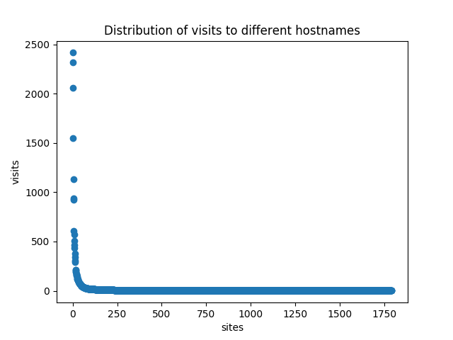

In Firefox the browsing history is stored in places.sqlite. Some documentation exists here: https://developer.mozilla.org/en-US/docs/Mozilla/Tech/Places/Database
The browsing history seems to be a valuable data set for analysis of human behavior patterns on the internet. For example it may show the evolution of thoughts and interests in search behavior, addiction to social media, variability in the amount of time spent on each site, prediction of browsing. The browsing data is easily collected and generates thousands of data points a month. Considering the difficulty in predicting the ways in which personal datasets can be exploited in the future, it seems rational to backup these browsing history databases.
At the current moment analysis.py includes only a very simple analysis. It reads the moz_historyvisits table which contains the full browsing history. Each row contains an ID to a place corresponds to the moz_places table. By going through historyvists and finding the URL and getting simply the hostname, it is possible to identify which sites have been visited the most and the distribution.
